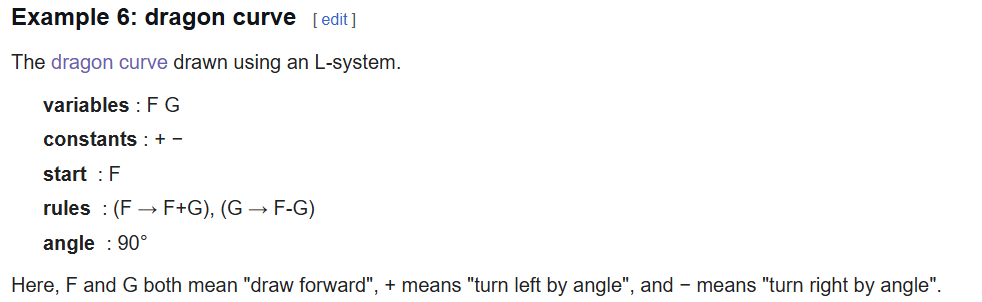
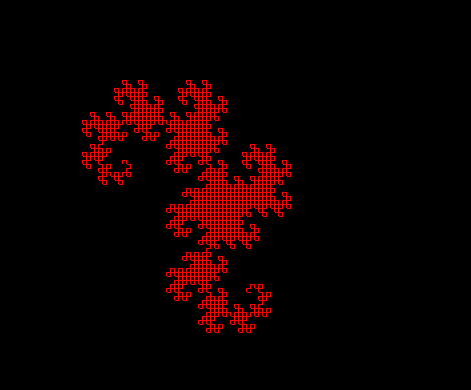

This project uses the sfml and an L System to generate fractals (currently only a dragon curve)
Uses visualEngine.cpp's main method to call methods that create a set of directions generated using the L system, which is then used as specifiers for methods that define vertexes, and are placed in an array, that acts as the sfml library type "linestrip". This essentially acts as the classic programming challenge/demo turtle, which can turn or move forward leaving a line in its path. This turtle follows the generated directions to form the fractal.
returns a vertex positioned based on the direction and input vertex
alters the direction based on current direction and turn direction. for example, if going right and turning right, the direction will be changed to down.
returns a vertex positioned based on the direction and input vertex
returns vector of ints, where each int represents an instruction (0 or 1 means forward, 2 means left, 3 means right). Iteratively rewrites the vector a specified number of times to follow the L system of the dragon curve (algorithm and output shown in the image below for number of iterations being 11)

